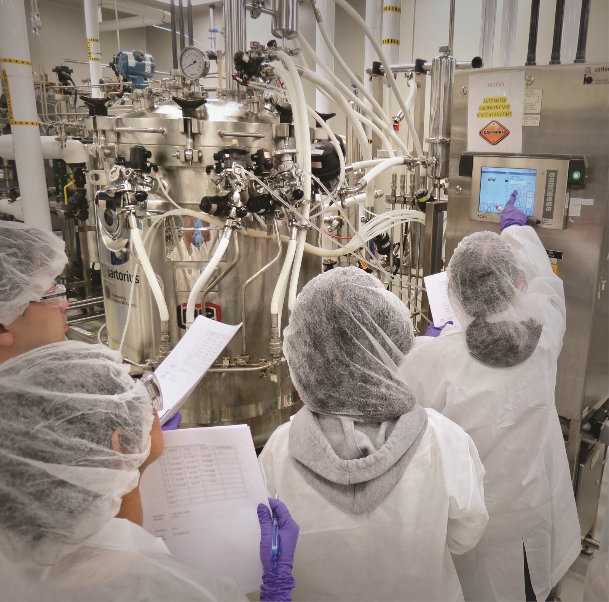

I / INPUT
何を持ち込んでいるか。
活動の出発点となる資源と課題を分けて整理します。「自社」は、その場・制度を運営する組織を指します。
- 自社・運営組織
- 他社・事業会社
- スタートアップ
公開資料では未確認。Keystone Ridgeの案件をスタートアップ支援案件と位置づける根拠。中小製造業と創業企業は同義ではない。
公開資料では未確認- アカデミア
- 市民・利用者・現場
Keystone Ridgeでは経営者と従業員が試作結果を見てロボット操作を体験し、進める判断に参加。工場の従業員を導入後の運用主体として扱う。
公開資料で確認出典 1
II / VALUE CREATION FUNCTIONS
資源を、どう価値へ変えるか。
以下は既存の8ステップへの編集上の対応づけです。各施設の公式な工程名や、全工程を自前で担うことを意味しません。
共通課題と個社の導入課題を分けて組む
購入前に実工程で成立条件を確かめる
試作結果を発注仕様へ翻訳する
採用を決めた後、ARMが技術要求をRFPへまとめ、実装事業者の見積り比較を支援する。検証に合格した機器と購入する構成を合わせ、試作品の評価と本番の納入仕様をつなげる。
技術と技能の両方を広げる
III / OUTPUT
直接、何が生まれたか。
試作品、データ、契約、標準、育成した人材など、活動から直接生まれたもの。
IV / OUTCOME
その結果、何が変わったか。
実際の利用、行動、業務、事業、地域の変化。報告された変化と、施設の活動に帰属できる効果は区別します。
ARMは、Keystone Ridgeが約30万ドルを投じ、ACT Robotsによるロボットセルを導入したと2025年3月に公表。無料の概念実証から企業が費用を負担する設備購入へ進んだことが確認できる。
運営者・関係者の報告出典 1公開資料では未確認。同社の導入後の回収期間、生産量、不良率、労働負荷や賃金の継続的改善。設備購入は実装の一段階であり、最終的な経済・社会効果の証明ではない。
公開資料では未確認
PROJECT IN FOCUS / 具体的な事例
ARM Robotics Manufacturing Hub × Keystone Ridge Designs
確認できた段階：導入 調査確認日 2026-09-28
確認できた変化
導入企業が自ら投資し、本番用の設備を据える段階に進んだ。継続運用は製造企業、統合はACT Robotsが担い、研究所が工場を運営するモデルではない。
評価の限界：公表値は設備投資まで。毎月の便益、労働者への配分、投資回収の達成は未検証。
DESIGN BACKWARDS FROM IMPLEMENTATION
社会実装から逆算して、
何を先に整えているか。
実証の先にある導入・運用・継続から、この事例の設計を読み解きます。原典で確認できる仕組みと、MDLの設計解釈・他地域へ応用するための提案を区別して読んでください。「提案」「未実施」と記す内容は、当地で実施済みの工夫ではありません。仕組みの存在と、全案件で成果が出たことも別に扱います。
MORE DETAIL / 運営・根拠・応用
運営の全体像と、学びを深める資料。
費用負担、公表値、応用条件、写真・動画、原典を続けて確認できます。
01どう動かしているのか。
分野ごとの研究所を会員制の官民連携組織として運営し、企業、大学、政府が共通の製造技術課題と人材課題に資源を持ち寄る。産業側は自社生産ラインを止めずに技術を試す設備・知見へのアクセスを得て、研究所は技術の商用化と教育訓練を並行して進める。ネットワークの会員案内は共同R&Dや知財へのアクセスを示す。会費、契約期間、調達条件、具体的なIPの利用権は、参加先研究所の契約で確認する必要がある。2026年3月公開の『2025 Annual Report』はFY2023を対象とし、基礎連邦資金1.604億ドルに対して州・追加連邦・民間等の追加資金3.79億ドル超を報告する。2025年の活動紹介では、職種と技能をつなぐ共通枠組みを公開し、技術開発だけでなく人材の再現可能性にも取り組む。
- 産業共通の技術・技能課題を特定
- 分野別研究所へ会員が参画
- 設備・研究費・専門家を共同投入
- 企業の製造と人材育成へ移転
02誰が負担し、誰が担うか。
連邦の基礎支援、州・追加の連邦資金、民間資金による共同負担。企業は研究所の会員として共同投資等に参加。会費・知財・案件費用は研究所と参加契約により異なる。
制度やプログラムの財源と、各参加企業・地域に発生する費用は同じではありません。公開範囲を超える案件別予算・契約条件は未確認です。
03確認できたこと。
FY2023に会員登録2,921件、進行中の応用研究開発929案件、教育・人材育成への参加150,718人を報告（16研究所集計）。
読み取れる範囲：会員登録はユニーク組織数とは確定しない。参加を訓練修了・就職・所得増加と同一視しない。報告書名は2025、公開は2026年。
原典で確かめる ↗ 出典の説明 ↓04日本で活かすなら。
【分析】地域コンソーシアムへの示唆は、企業ごとの案件と、複数社が共有すべき基盤課題を分けることだ。例えば運行データの仕様、整備教育、評価方法は共有しやすい。一方で個別サービスの顧客情報や競争上重要な設計まで自動的に共有する必要はない。共通設備と研修を持つことで、小規模事業者が単独では負担できない能力へアクセスできる。ただし会費を集めるだけでは実装は進まない。共同研究の成果を受け取る企業、現場へ移す担当者、必要な教育、導入後の保守費まで合意してから案件を採択する。公費を使う場合は、特定大手だけへの補助になっていないか、参加できない企業や労働者への波及も評価する。
05そのまま真似できないこと。
公式の現行概要は17研究所、2025年の年次紹介は会合に18研究所が参加と記載し、単一の『現在の研究所数』を確定していない。FY2023当時のネットワークは17研究所だが、主要実績の集計対象は16研究所。年度途中参加のEPIXCには通年データがなく、現在のネットワークとも区別する。反対仮説は「参加企業は元々研究力が高く、共同基盤がなくても成果を出した」である。会員数と案件数は活動規模で、費用対効果や商用導入率ではない。IP・会費・継続公費依存は研究所ごとの確認が必要。
06次に、何を確かめるか。
【提案・未実施】コンソーシアム事務局が3社に共通する一つの仕様・技能課題を選び、90日で共通手順を作る。別の2社が開発チームの支援を減らして再利用できるか検証し、導入時間、個別改修費、教育後の作業品質を測る。2社とも費用込みで便益があれば共有基盤を拡張。個別調整費が再開発費を超えるなら共通化範囲を縮小する。
07現場を、写真と動画で。

PHOTO: Photo courtesy of the Biotechnology Training and Education Center at North Carolina State University, a NIIMBL partner · 掲載元 ↗ · NIST editorial image permission — attribution and NIST mention required ↗
写真の詳細
NISTが紹介するNIIMBLパートナー、North Carolina State UniversityのBTECでのバイオ医薬品製造研修。Manufacturing USAの人材育成活動の一例（2019年公開、撮影日不詳）。
NIIMBL Training · 撮影日不詳（2019-03-22公開） · EXIFの向きを確認して縮小。JPEGに変換・再圧縮。色変更なし。切り抜きなし。
冒頭写真：MxDの工場フロアに設けられたDiscrete Manufacturing Testbedで、産業用ロボットと生産設備を案内する技術者。
Innovation and Collaboration: The Manufacturing USA Advantage
Manufacturing USA / NIST
公式サイトで見る ↗08原典を読む。
2025 Report to Congress – Appendix A ↗
929 ongoing projects、主要数値は16研究所の集計。17番目のEPIXCはFY2023途中加入のため通年数値から除外。
第三者診断、現場参加、RFP、ACT Robots、約30万ドル設備導入